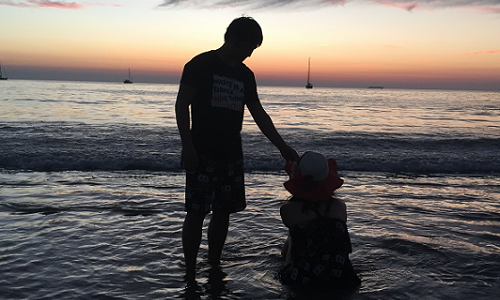
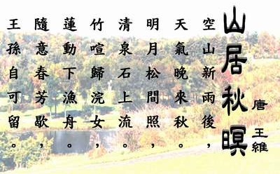
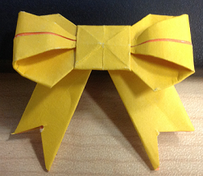

After work
 I always hangout with my wife after work ("life with wife"). To me, no one could be more important than her and time could be boring and unreal without her. The happiness of my life is to spend time with my wife and makes days be dates. I know that we will be together forever and I wish she could be happy forever. |
When I am free, I like to hike in the mountains with my favourite music. I believe that the mountains are the biggest gift from mother nature, they always attract me to feel the wind at the peak. |
I am a big fan of football and my heart belongs to Bayern Munich. I have being following Bayern for ten years, during which we lost many times, but we never give up our dream, and so does our dream. Finally in Wembley this year, we defeated the old enemy who have beated us five times before and won the Champions League. Later on in Prague, we vanquished the opponent that we failed last year, using just the same drama. In this immortal, epic season 2012-2013, we are the King of Europe. |
 Another love of me is the Chinese Literature, especially the poems, they are the real art that will last forever. Most poems are short, however, they are long enough to illustrate a whole world. You can not only see what the poets see but also feel what they feel, which is the weakness of the photos and pictures since nothing can be more beautiful and vivid than imagination. |
 Origami is very interesting. I am now trying very hard to become an amateur from a beginner. |